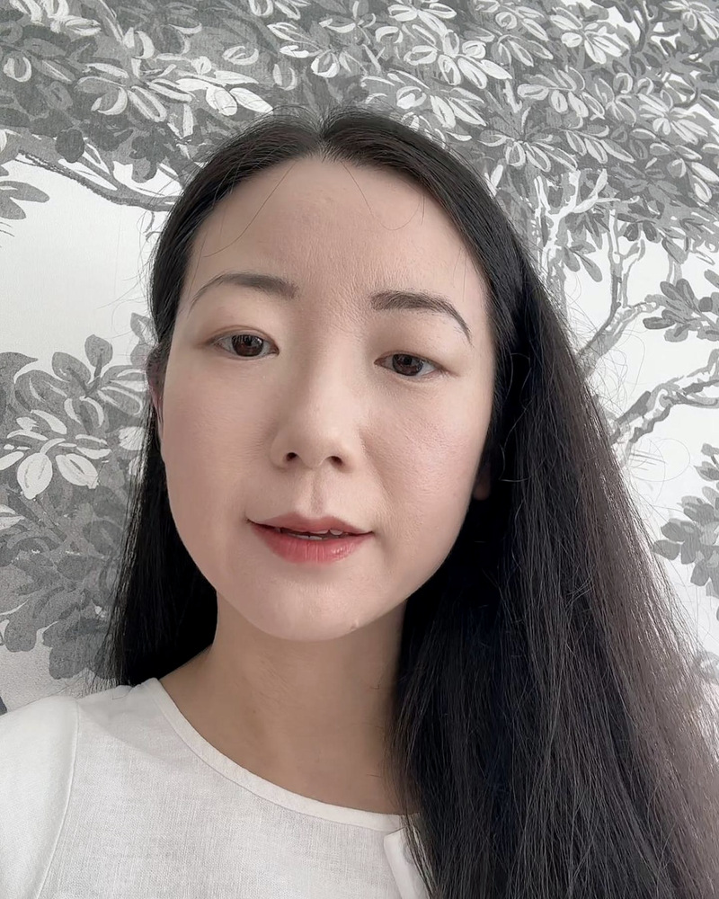

How a stubborn curiosity about everyday habits turned into a mission to bring real Traditional Chinese Medicine to people in the West.

Hi, I'm Sara.
For years I ran a content creator agency. Four or five of those years were relentless: long days, not much rest, and since moving to the UK almost twenty years ago, eating and living much the way everyone around me did.
Early last year my body started to push back. Mouth ulcers came almost every month. Every cold turned into a cough I couldn't shake, once for three months. I went back to my doctor again and again, and every test came back normal.
I took it to a Traditional Chinese Medicine doctor, and it was the first time anyone looked past the symptom itself. I was asked what I ate and when, how I slept, how I worked, whether I ran cold. The changes that followed were ordinary: warm food over cold, earlier nights, a steadier rhythm to the day. For once I actually kept to them.
After that I couldn't stop. I spend a lot of my spare time studying Traditional Chinese Medicine online and reading the classics, and I go back to China for a few weeks at a time to shadow senior Traditional Chinese Medicine doctors, sitting in on their consultations: watching how they read a person, and learning the classical system (the Si Sheng Xin Yuan, Huang Yuanyu's lineage) that underpins everything we do.
The more I learned, the more I saw how many of my old habits had been wearing me down, and how many things that are completely normal here in the UK are ones Traditional Chinese Medicine would quietly question: the iced drinks, the cold lunches, the big dinner at the end of the day.
So I started making short videos about it: small, everyday things, explained in plain English, for anyone they might help.
I'm a TCM enthusiast and educator, not a licensed practitioner. I don't diagnose or treat. What I've built is a bridge, so the depth of the people I work with can actually reach people here, in plain English, made for modern life.
"Real Traditional Chinese Medicine isn't mystical. It's a deeply practical way of reading the body, refined over more than 2,000 years. It just never got translated for people like us."
If you're not happy with how your body's been running, want to feel better in yourself, or are living with pain, YinYang Well puts you in front of people whose reading I trust, in one of two ways.
The TCM Wellness Report is where most people start. A senior physician at Baoputang, a licensed clinic in Ningbo, China, reads your intake and photographs and writes back how your body's running now, and the everyday changes to make first.
The Observation Reading goes further back. It's with an independent practitioner in China, who learned privately under one teacher and has been working with clients since 2002. Senior TCM doctors bring her the cases they can't place. She reads you live, one to one, and sets out where she thinks it all started, what to be careful of, and whether seeing her in person would add anything.
Two readers, because they answer two different questions: how you're running now, and how you got here.
Start with a Traditional Chinese Medicine (TCM) Wellness Report, reviewed by a senior doctor and sent back as a clear, personalised plan.
Start your assessment